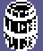
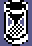
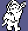
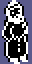

| Things and creatures |
The knight shares the castle with things he can carry and use, doors that need keys, and creatures that chase him, hurt him, and in one case steal from him. All of them are object records, and what each does is written in a few bits of them: the kind byte (+12) says what a thing is and what touching it does, the state (+14) what a creature does each pass. This page is those bits, the object table that remembers where everything is, and each creature, with the rules for what happens when two of them meet.
OBJECTS holds 381 records: a room and a type, then four bytes for a type below $46 or nine for the others. The first 163 are the things, six bytes each; then 174 doors of eleven; then 44 more of six, which the author's leftover source heads STATIC OBJ. Only the first 163 can move between rooms: SET_THING_ROOM (the author's ROMM) finds a thing's entry by its number, six bytes a number, which works only while every record before it is six bytes long. A thing's room is written there when it is picked up ($FE, no room), dropped, or taken out of the game; its place is written back by SAVE_OBJECT_POSITIONS (the author's EEN) whenever the knight leaves a room, for every record of the room up to the first door. Measured: in room 20, thing 1 moved to 54, 68, 56 and the game ended -- its entry went from 50, 68, 50 to 54, 68, 56. A new game puts the first 1200 bytes back from the master copy, which is all the things.
A thing with bit 5 of its kind byte can be carried. The low nibble says what it does; the things in the table, by kind, with their templates' sprites:
| Kind | Sprites | How many | Rooms | What it does |
|---|---|---|---|---|
| 0 |  | 61 | 2, 7, 13, 20, 23, 26, 33-34, 41, 43-44, 46, 49, 55-57, 61, 64, 71-72 | nothing when used |
| 4 | 12 | 2, 20, 41, 49, 57, 69 | used: LIFE up by 10, to 99 at most | |
| 5 |  | 5 | 19, 24, 45, 56 | used: freezes the room's creatures until the knight leaves |
| 6 | 3 | 28, 44, 50 | used: LIFE to 99 | |
| 8 | 5 | 7, 20, 75 | a decoy: the rising guards go for it rather than the knight, and take it | |
| 9 | 1 | 29 | used: carries the knight to room 30, where a new game starts him | |
| 10 | 2 | 48, 57 | destroys a wraith it is dropped or pushed onto | |
| 11 | 1 | 14 | while it lies in room 61, the figure there wakes and the room's hole works |
The knight carries up to five, one in each of five places (1 to 5 choose the place in use; the panel shows it, SHOW_THING_IN_USE). X, C or V picks up (PICK_UP): only into an empty place, from a box his own size four units ahead of him, the first thing there that can be carried -- unless the load would reach 8. A thing's weight is its +16 less 16; the heaviest weigh 6. CAPS SHIFT or Z drops the thing in use beside him, level with his top, and it falls; if something is in the way it is BLOCKED.
6 or 7 uses the thing in the place in use (MAIN_LOOP), if its kind does anything; it is used up. The start room has the kind-9 thing: when this page was built the knight was put on it, X picked it up (the place held its record, $BCA4, and its entry said room 254), and 6 used it: two passes later he was in room 30, at 54, 78, 110, the place a new game puts him, and the thing's entry still said 254: gone for good.
Every eleven-byte record is a door: 174 of them. Its six bytes after the place give the room behind it (+13), the thing that is its key (+14, a thing's number, or none), where the knight arrives (+15, +16, +18) and the way through (+17, a direction). 162 are doorways, walked through along +6 or +8; 7 are holes he drops through, and 5 holes up, which need a jump. BUMPED takes him through when he walks into one the right way, holding its key in the place in use and wholly within its span: the room's things are saved and the room behind is entered -- unless a thing (a troll aside) already stands where he would arrive, which is BLOCKED. Anyone else finds a door a wall. 21 doors need a key:
| Key (thing) | Sprite | Lies in room | Doors | In rooms |
|---|---|---|---|---|
| 1 | 20 | 6 | 21-26 | |
| 2 | 72 | 2 | 63, 65 | |
| 3 | 41 | 4 | 39, 42, 45 | |
| 4 | 56 | 2 | 62, 77 | |
| 5 | 33 | 1 | 4 | |
| 6 | 46 | 4 | 46, 57, 62 | |
| 7 | 14 | 1 | 60 | |
| 8 | 61 | 1 | 31 |
Room 61's only way out, a hole, also needs the kind-11 thing to be lying in the room; the same thing wakes the room's figure (below).
A creature is a state. Its template gives it one, and CHE3D and CREATURE_UPDATE act on it every pass (see the states). From the templates and from every room entered in the simulator when this page was built:
| State | What | Types | Sprite | Rooms | Kind bits | What it does |
|---|---|---|---|---|---|---|
| 6 | guard | 26 | $9F3C | 29, 36, 38, 73, 77-78 | can be killed, fighter | patrols along +6, chasing the knight when within 30 |
| 10 | guard | 33 |  $9F3C | 16, 31, 33, 39-40, 46, 60, 66 | can be killed, fighter | patrols along +8, chasing the knight when within 30 |
| 9 | rising guard | 27 | $A4B8 | 15, 20, 34, 41, 43, 71-72 | can be killed, fighter | rises out of the floor, then always chases (or goes for a decoy) |
| 7 | troll | 13 | $8BB8 | 2, 5, 7, 17, 22, 27 | can be killed, fighter, hurts | chases; hurts at a touch until its first pass (below) |
| 11 | wraith | 45 | $5E88 | 9, 12, 28, 48, 56-59, 68 | fighter | chases; only two things can destroy it |
| 13 | ghost | 52 | $5B30 | 3, 8, 28-29, 32, 50-51 | can be killed, fighter | wanders, turning off whatever it meets; takes any thing it touches |
| 12 | floating thing | 51 | $5B00 | 15-21, 25-27, 34-40, 70, 73 | fighter | hangs in the air and flickers |
| 14 | floating thing | 40 | $6104 | 47-48 | fighter | hangs in the air and flickers |
| 15 | the figure of room 61 | 56 |  $6084 | 61 | fighter | stands until the kind-11 thing lies in the room, then is a wraith |
| 4 | winged creature | 48 | $5C84 | 45-46 | fighter | strikes when the knight stands within reach in front of it |
| 3 | bouncing ball | 2 | $7E88 | 15, 19, 42, 53-54, 62, 64-65, 80 | hurts | bounces about, hurting what it touches |
The names are this disassembly's, from the pictures and from the author's own routine names MITRO and MIWRAI (mirror troll, mirror wraith). The winged creature's strike never happened in the build's play-throughs; stage 2 of this disassembly staged it, and it takes 3 LIFE a pass.
A chaser keeps its course in +18 and a countdown in +15 (STEER, the author's ZZ1). When the count runs out, ZOOMIN picks the target -- the knight, or for a rising guard a decoy lying in the room -- and AIM_AT points the chaser along one floor axis only, whichever the target is further off along, and sets the count to 10 passes, or 3 when it is within 14 along +8. So a creature zigzags after the knight, changing its mind every few passes. The guards of states 6 and 10 chase only when he is within 30; otherwise they walk to and fro.
When a move runs into something that is not a door, OBJECTS_MEET looks at the kind bytes of the mover and the other, in this order:
| When | What happens | |
|---|---|---|
| 1 | the mover hurts (bit 4): the troll, the balls | the knight loses 10 (not on a room's first pass); anything else that can move is knocked up; the mover vanishes |
| 2 | the knight walks into something that hurts | he loses 10; it vanishes |
| 3 | a fighter (bit 7) walks into the knight | he loses 1 |
| 3 | the knight walks into a fighter | sword not out: he loses 1. Sword out and the other can be killed (bit 6): one of its four strikes is gone; at none a guard becomes a helmet, anything else vanishes |
| 4 | the ghost meets a thing that can be carried | the thing leaves the game |
| 5 | a thing of kind 6 or 10 meets a wraith | both leave the game |
| 6 | anything meets a kind-7 floor (the pits of rooms 9 and 12) | it vanishes; the knight's LIFE goes to 00 |
| 7 | a rising guard meets a decoy | the decoy leaves the game |
| 8 | anything else | an obstacle (movement) |
LIFE is two decimal digits; at 00 the game is over. Falls cost it too (movement). The troll's table records have bit 4 set, but its own case clears it on its first pass, so after that it only fights like a guard.
B, N or M fights: the sword is out for three passes, then away for three as the knight steps forward. As FIND_OBSTACLE walks the records it deals the fighters six strike counters ($FF98-$FF9D), set to 4 as each room is entered, the first six fighters from the top of the list one each. When this page was built the start room's guard (record 9) was frozen, put against the knight's side, and the knight held B and Y: its counter went down at passes 13, 43, 73, 97, and at the fourth strike the guard became its helmet -- sprite $A4B8, a thing that can be picked up, knocked into the air.
What a guard leaves: SPRITEA4B8, also the first frame of a rising guard.
As CHE3D goes through a room's things it notes the first decoy (kind 8) it meets, and the rising guards go for that instead of the knight; one that reaches it takes it out of the game (MEET_DECOY). In room 20, played in the simulator when this page was built, the rising guard took the decoy after 146 passes, its entry went to room 254 and the note was cleared. With the decoy's kind cleared first, the guard went for the knight instead, and after 400 passes the thing was still there.
The ghost (state 13) takes any thing that can be carried that it runs into: its entry goes to room $FE, and it is gone. The wraith (state 11) cannot be killed with the sword -- its kind byte lacks bit 6 -- but a thing of kind 6 or 10 dropped or pushed onto it destroys both; stage 2 of this disassembly staged that in room 28. Of the 5 things of those kinds, 3 start in a room with a wraith.
Using a kind-5 thing sets bit 7 of GAME_FLAGS, and only entering a room clears it. While it is set, CHE3D treats every state but the knight's 8 and his jump's 5 as state 0: the creatures stand and only fall. Release 1 exempted only state 8 -- it has JR I00 where Release 2 has CP 5 and JR NZ,I00 at $F263 -- and there a jump during the freeze is never counted down: the knight stays in state 5, and never walks again. Played in the simulator when this page was built, the freeze set, SPACE for one pass and then Q for ten, in Release 2 and with Release 1's instruction put at $F263:
| The knight's state, pass by pass | Q moved him along +8 | |
|---|---|---|
| Release 2 | 5 5 5 5 5 5 5 5 8 8 8 8 8 8 8 8 8 8 8 8 | 20 |
| Release 1's instruction | 5 5 5 5 5 5 5 5 5 5 5 5 5 5 5 5 5 5 5 5 | 0 |
That is very likely why the instruction was changed (inferred: nothing says so). Stage 2 of this disassembly also played it in Release 1 itself, loaded from its own tape, with the same result.
Ville Krumlinde's disassembly has the drop and the door's LOCKED; where this page differs: SAVE_OBJECT_POSITIONS copies the records' places into the table, not the table into the records; the second BLOCKED in the door code is the arrival spot being taken; kind 4 adds ten to LIFE, and kind 5 freezes the creatures; 0 with SYMBOL SHIFT quits and 6 or 7 uses, where he has 0 as the use key; and the alternative target of the rising guards is the decoy.